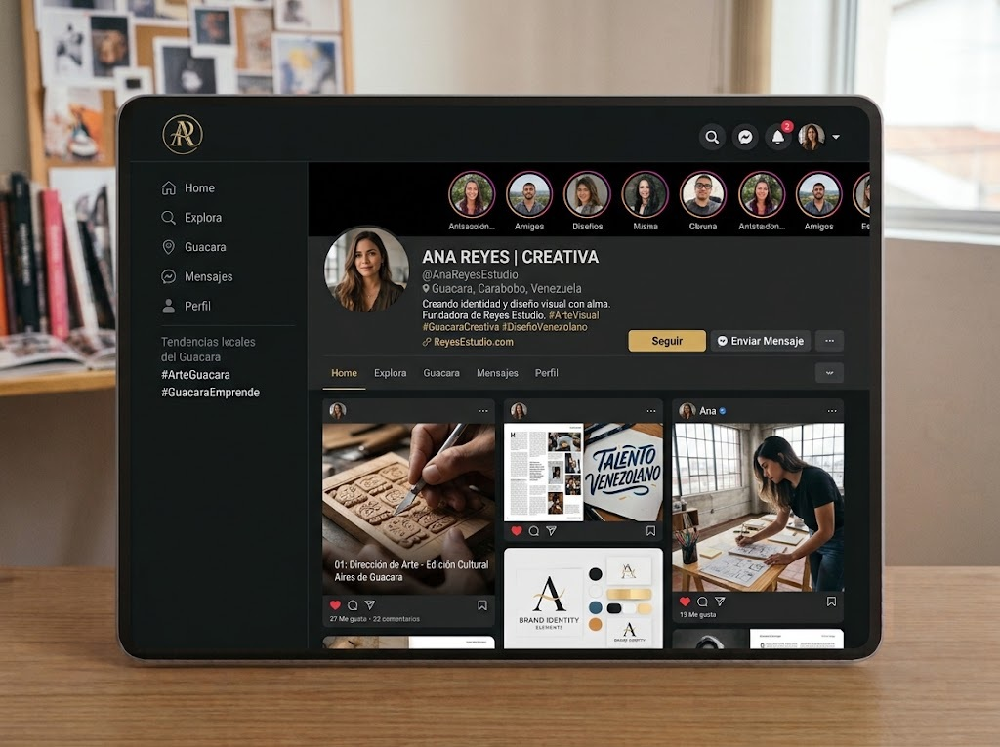
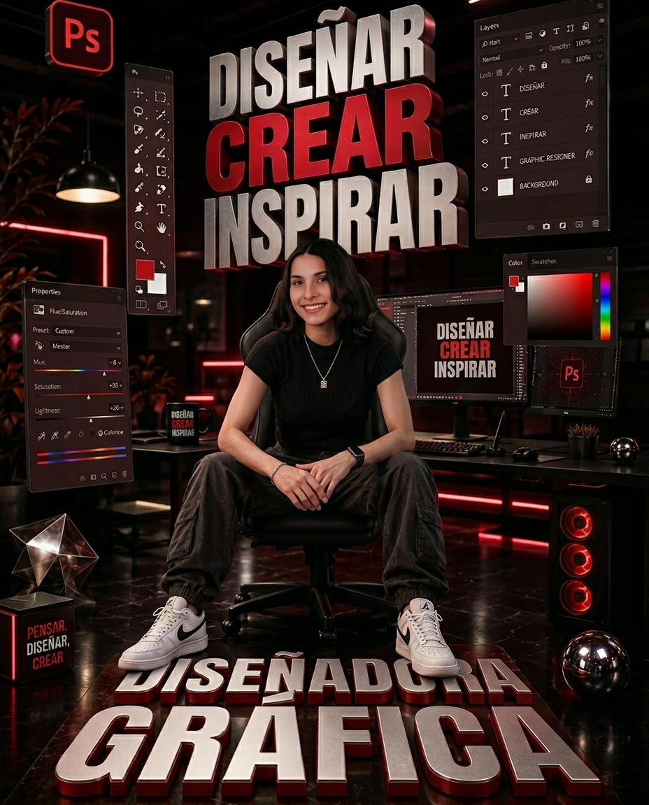

Portafolio Especializado
Showcase de Publicaciones
Herramienta Interactiva
Simulador de Feed Dark 3x3
Haz clic en los temas para cambiar la combinación estética del feed interactivo y comprobar cómo interactúan los contrastes.

Capacidades Especializadas
Planes & Servicios Social
-
(01)
Dirección de Feed Completo
Planificación mensual de cuadrícula: creación de piezas principales, carruseles y portadas coordinadas.
- 9 a 15 Posts
- Grid Layout
- Copy Strategy
-
(02)
Carruseles de Alto Engagement
Secuencias educativas y de venta con narrativa visual diseñada para maximizar el tiempo de lectura.
- Deslizable
- Infografías
- Copywriting
-
(03)
Kit de Plantillas Editables
Sistemas modulares en Figma o Canva Pro para que tu equipo ejecute contenido rápido sin perder el nivel estético.
- Figma Kit
- Fuentes
- Guía de Uso
Inicia Tu Transformación
Cotiza Tu Red
Cotiza Tu Red
Social Ahora
Cuéntame sobre tu marca o perfil para enviarte una propuesta a medida en menos de 24 horas.